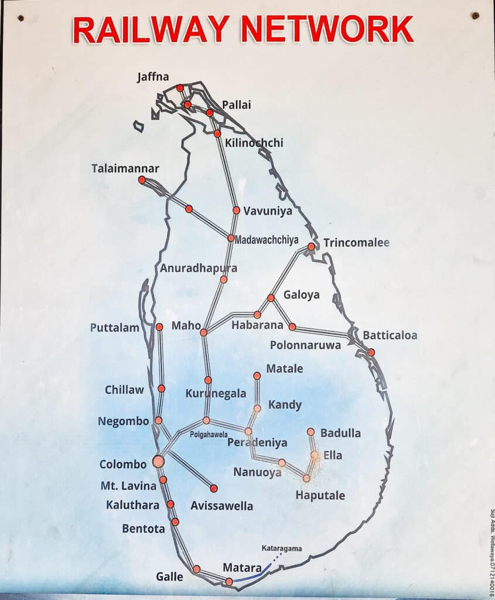

Train Schedule

| Train No | Route | Departure | Arrival | Duration | Price (LKR) | Status |
|---|---|---|---|---|---|---|
| 101 | Colombo to Kandy | 07:00 AM | 09:00 AM | 2 hrs | 500 | On Time |
| 102 | Kandy to Colombo | 10:00 AM | 12:00 PM | 2 hrs | 500 | On Time |
| 103 | Colombo to Galle | 08:00 AM | 10:30 AM | 2.5 hrs | 700 | On Time |
| 104 | Kandy to Nuwara Eliya | 09:30 AM | 11:30 AM | 2 hrs | 600 | Delayed |
| 105 | Anuradhapura to Colombo | 06:00 AM | 08:30 AM | 2.5 hrs | 500 | On Time |
Upcoming Special Trains
- Special Train to Jaffna - Departure: 05:00 AM, Arrival: 11:00 AM
- Holiday Train to Galle - Departure: 07:30 AM, Arrival: 10:00 AM